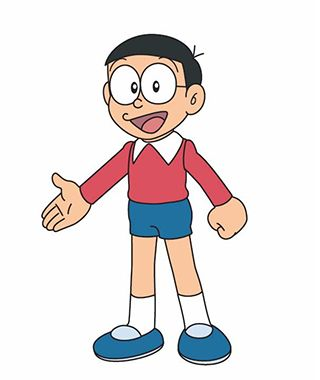
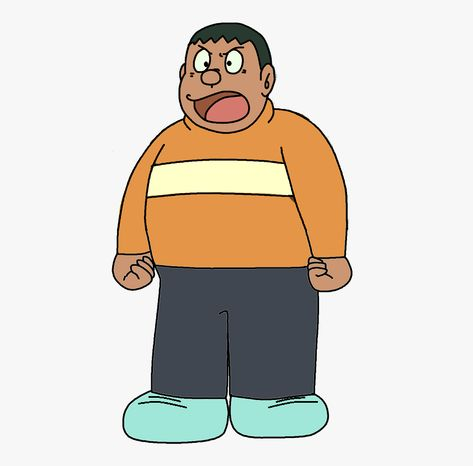

Siapa Itu Doraemon?
Doraemon adalah robot kucing biru dari abad ke-22 yang dikirim ke masa lalu untuk membantu Nobita Nobi, seorang anak yang sering mengalami kesulitan. Doraemon memiliki kantong ajaib yang berisi berbagai alat canggih yang dapat membantu Nobita dalam kehidupan sehari-hari. Walaupun sering mengalami tantangan, Doraemon selalu setia dan berusaha untuk membuat masa depan Nobita lebih baik.
Karakter Utama
| Gambar | Nama | Deskripsi |
|---|---|---|
| Doraemon | Doraemon adalah robot kucing berwarna biru yang datang dari abad ke-22. Meskipun awalnya ia memiliki warna kuning dan telinga, insiden di masa depan membuatnya kehilangan telinganya dan berubah warna menjadi biru. Doraemon sangat menyukai dorayaki dan memiliki kepribadian yang baik hati, meskipun terkadang ia bisa marah jika Nobita bertindak ceroboh. | |
|  | Nobita Nobi | Nobita adalah anak laki-laki yang ceroboh, malas, dan sering mengalami kesulitan dalam belajar serta olahraga. Ia sangat bergantung pada Doraemon untuk mengatasi masalahnya, tetapi terkadang justru menyalahgunakan alat ajaib Doraemon untuk kesenangannya sendiri. Meskipun begitu, Nobita memiliki hati yang baik dan selalu berusaha untuk menjadi lebih baik. |
| Shizuka Minamoto | Shizuka adalah teman baik Nobita dan juga gadis yang disukainya. Ia adalah sosok yang cerdas, ramah, dan penyayang. Shizuka sangat suka bermain biola, meskipun kemampuannya dalam bermain alat musik tersebut sering kali dipertanyakan. Di masa depan, Shizuka akhirnya menikah dengan Nobita. | |
|  | Gian (Takeshi Gouda) | Gian adalah anak yang bertubuh besar dan dikenal karena sifatnya yang kasar serta sering menindas Nobita dan teman-temannya. Ia memiliki hobi menyanyi, tetapi suaranya sangat buruk sehingga teman-temannya selalu berusaha menghindari konsernya. Namun, di balik sikapnya yang keras, Gian sebenarnya memiliki hati yang baik dan akan membantu temannya dalam situasi darurat. |
| Suneo Honekawa | Suneo adalah anak kaya yang sering memamerkan barang-barang mahalnya kepada teman-temannya. Ia juga sering bekerja sama dengan Gian untuk mengerjai Nobita. Namun, Suneo adalah sosok yang cerdas dan suka berbicara, yang membuatnya pandai dalam berbohong dan membual. Meskipun begitu, ia tetap memiliki sisi baik dan sering membantu teman-temannya dalam keadaan tertentu. | |
| Dorami | Dorami adalah adik Doraemon yang lebih canggih dan pintar. Ia memiliki warna kuning cerah dan tidak memiliki masalah teknis seperti kakaknya. Dorami sangat peduli pada Doraemon dan sering datang membantu jika Doraemon sedang kesulitan. Meskipun lebih kuat dan cerdas, ia tetap menghormati Doraemon sebagai kakaknya. |